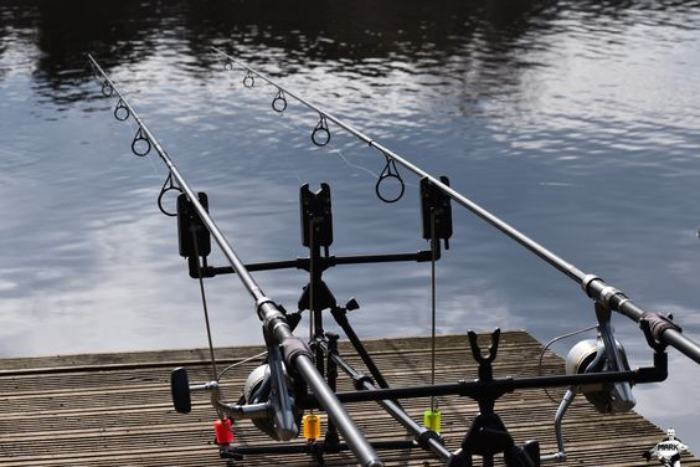
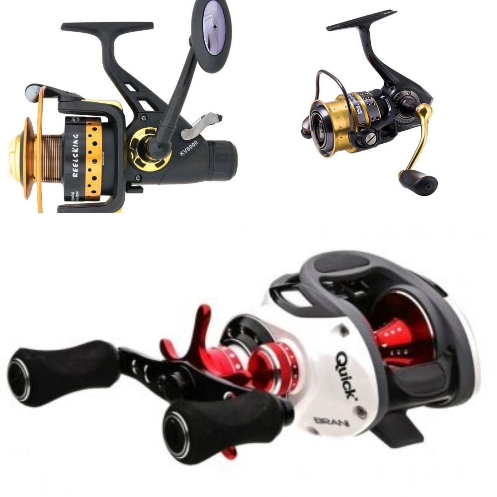
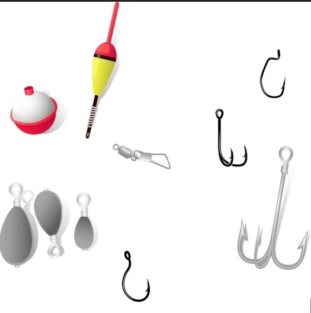

Енциклопедия на риболовните принадлежности
Изборът на правилното оборудване е ключът към успешното приключение край водоема.
1. Риболовни пръти (Въдици)
Въдицата предава движението на примамката и помага при борбата с рибата. Основни характеристики са акцията (гъвкавостта) и тестът по влакно.
- Спининг: Леки и здрави, предназначени за постоянно замятане. Изработват се от високомодулен карбон.
- Фидер: Имат 3 или 4 сменяеми върха с различна чувствителност. Използват се със специални хранилки.
- Директен телескоп: Класически избор без водачи за бърз риболов на дребни и средни риби.
- Шаранджийски пръти: Изключително мощни, способни да изхвърлят тежести над 100г на дистанции над 100м.


2. Риболовни макари
Макарата е сърцето на такъма. Тя трябва да има плавен аванс (спирачка), за да предотврати скъсване на влакното.
- Преден аванс: По-леки и по-надеждни за спининг риболов.
- Заден аванс: Удобни за бърза настройка по време на борба с рибата.
- Байтрънър: Двойна спирачна система, задължителна при риболов на трофейни шарани.
- Мултипликатори: Използват се за морски тролинг или тежък джиг риболов.
3. Примамки и аксесоари
Разнообразието тук е огромно, като всеки сезон изисква различен подход.
- Воблери: Разделят се на плаващи, потъващи и със неутрална плаваемост (суспендери).
- Силикони: Най-ефективни при студен риболов на бяла риба и костур.
- Изкуствени мухи: Използват се при специфичния риболов "на муха" за пъстърва и кефал.

4. Такъми за риболов на мирни риби
Такъми за риболов на дъно и на плувка
- Плувки: Служат като индикация за закачена риба
- Oлово:За риболов на дъно
- Куки: За закачане на стръвта и рибата.

🛠️ Съвети за поддръжка
- ✅ След риболов в солена вода, винаги измивайте такъмите с чешмяна вода.
- ✅ Не оставяйте въдиците на директна слънчева светлина в колата.
- ✅ Смазвайте ролката на бигела на макарата поне веднъж на два месеца.
- ✅ Проверявайте първите 2 метра от влакното за наранявания след всеки излет.